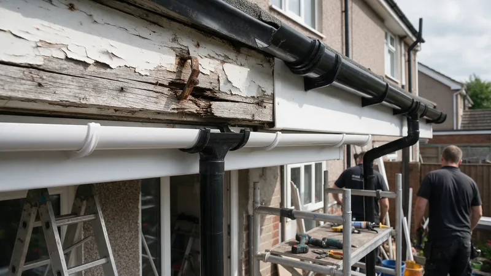
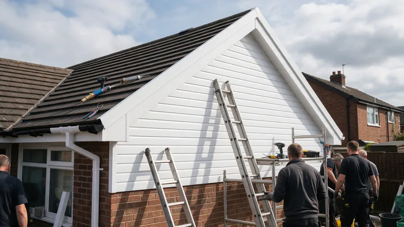

What they are and why they matter
The fascia is the upright board along the front edge of the roof, closing off the rafter ends. Every gutter bracket on the house screws into it. The soffit is the flat board underneath, running back to the wall, closing the gap and carrying the ventilation into the roof space.
That second job is the one people do not know about. Air has to get into a loft along the eaves, which is why a new soffit has a continuous vent strip in it. Board the eaves over solid and you can swap a rotten fascia for condensation in the roof, which is a worse and more expensive problem than the one you started with.
The four parts of a roofline
Off, not capped over
Capping is a thin uPVC skin screwed over the existing timber. It is quicker, it is cheaper, and on day one it looks the same. What it does is leave the old board in place, with whatever it was doing, sealed in behind plastic where nobody can see it. If that board was wet, it stays wet.
Taking the old board off means the only time in thirty years that the edge of your roof is open, so somebody can look at the rafter feet, the felt at the eaves and whether the tiles are sitting right. That look is most of the value of the job. We will tell you what is there, with photographs, including when the answer is that it is all perfectly sound.
What we find, and what we say
Soft rafter ends, felt that has perished where it turns into the gutter, no felt at all on an older house, a wall plate that has been wet, birds in the eaves. Some of that is ours to put right as part of the job, some of it is a roofer's, and some of it is worth knowing and leaving alone. We would rather tell you which of the three than quietly board over it.
 Generated photo
Generated photoGenerated for this demo. Not a photograph of a real job.

Generated photoPaint holds it together long after the wood has gone. Generated for this demo.
On the job
How this one usually goes.
- Access up firstLadders for a straightforward front, a tower or a scaffold for a gable, a two storey run or anywhere a ladder cannot stand squarely.
- Gutter down and old board offThe run comes down carefully so it can go back if it is sound, then the fascia and soffit come off rather than getting covered over.
- Look at what is underneathRafter feet, the felt at the eaves, the wall plate, any sign of water or birds. You get told what is there and shown a photograph of it.
- New soffit, new fascia, vents inSoffit back to the wall with its ventilation strip, then the fascia, fixed into sound timber rather than into whatever is left of the old board.
- Gutter rehung to a lineNew brackets along a string line so the fall is right, the run clipped back in, then water through it while somebody watches the wall.
A sample running order for this demo. Yours depends on the house and what we find when the board comes off.
Questions
Asked about this job.
Can you replace wooden fascias with uPVC?
Yes, that is most of this work. The old painted timber comes off, what is underneath gets looked at, and new fascia and soffit go on with the gutter rehung and the vents put back. The thing to ask anybody about is whether they are taking the board off or capping over it.
Will my loft still breathe?
It should breathe better. A new soffit goes on with a continuous vent strip, which on a lot of older houses is more ventilation than the painted timber it replaced. If your roof has an existing ventilation arrangement up at the ridge we will leave it be and work in with it.
Do you have to take the gutter down?
Yes, to do the board behind it. If the gutter is sound it goes back up on new brackets. If it is the same age as the fascia and has already gone brittle, it is worth changing while the access is up, and we will say so rather than putting tired plastic back on a new board.
How long does the front of a semi take?
Normally a day for fascia, soffit and gutter across one elevation. All round a house with a gable and dry verge is usually two to three days, mostly depending on the access. Heavy rain stops this work rather than slowing it, because we will not leave the roof edge open in it.
General trade knowledge written for this demo, not advice on your property.
Our work
Sample jobs like this.
Generated photoBlack gutter on white boardWhalley Sample Generated photoNew fascia going on at the eavesClitheroe Sample
Generated photoNew fascia going on at the eavesClitheroe Sample Generated photoThe lot done in one goGreat Harwood Sample
Generated photoThe lot done in one goGreat Harwood Sample
Generated photoGable faced in shiplapLongridge SampleMade up samples with generated pictures. Tap one for the detail.
Also
The other things we do.
Gutter cleaning
Cleared out by hand from the top down, the outlet checked, the downpipe run through and the muck taken away rather than tipped in your border.
More →Gutter repairs and replacement
A dripping joint, a dropped bracket, a run that holds water in the middle. Most of it is a length and a seal rather than the whole set.
More →Cladding and bargeboards
The sloping boards up the gable and the panels nobody can paint safely any more. Done while the access is already up, not next year.
More →Downpipes
Clips into the mortar, a swan neck that actually clears the eaves, and the bottom going into a gully rather than on to the path.
More →Roofline replacement in uPVC
Fascia, soffit, gutter, bargeboard and the gable, all changed together in one go. One set of access, one mess, one finish.
More →Shall somebody come and look up at it?
Tell us which side of the house and your postcode. If it is pouring over tonight or a pipe has come off the wall, use the urgent line instead.